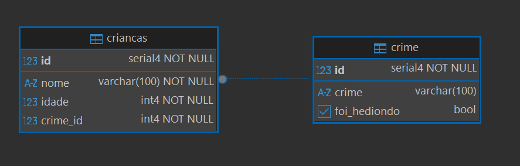

Exercícios!
Exercício prático: Fogo no Parquinho
Crie na nossa tela "Parquinho" as seguintes tabelas:

Insira 5 regristros diferentes na tabela crime e marque a coluna "foi_hediondo" como verdadeiro ou falso. Exemplo:
insert
into
crime(crime, foi_hediondo)
values ('puxou o cabelo do amigo',
false)
insert
into
crime(crime, foi_hediondo)
values ('assassinou o amigo na gangorra',
true)
- Insira 5 regristros diferentes na tabela crianças e os id dos crimes que elas cometeram
- Faça um select na tabela de crimes
- Faça um select na tabela de crianças
- Faça um select com join trazendo o nome da criança e o crime que cometeu
- Por ultimo um select com join trazendo tudo mas filtrando por crime hediondo.
Quando terminar, avise o professor pelo whatsapp que terminou..